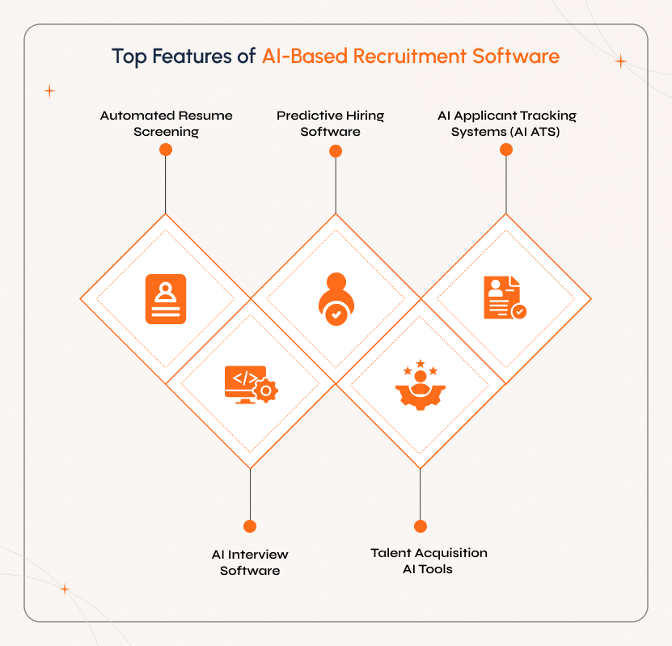
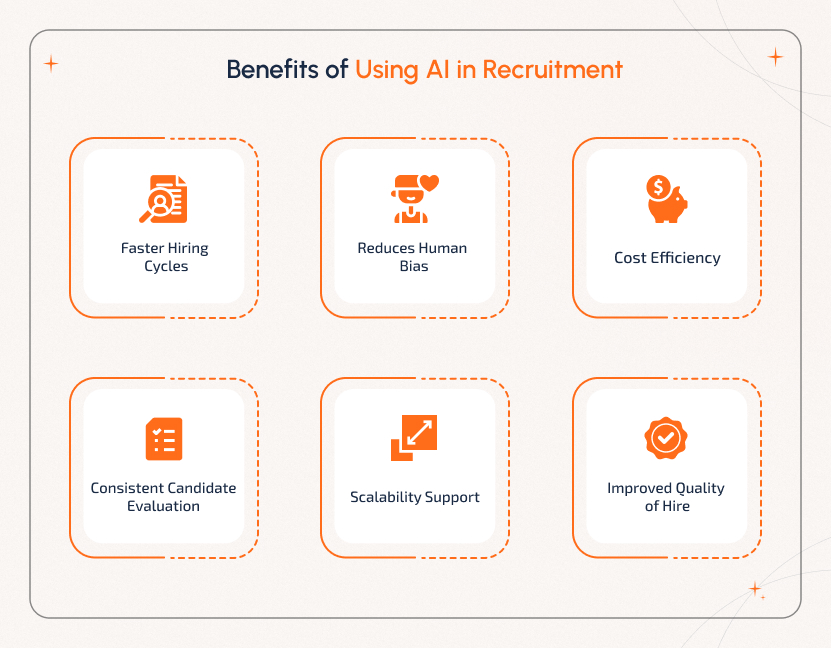
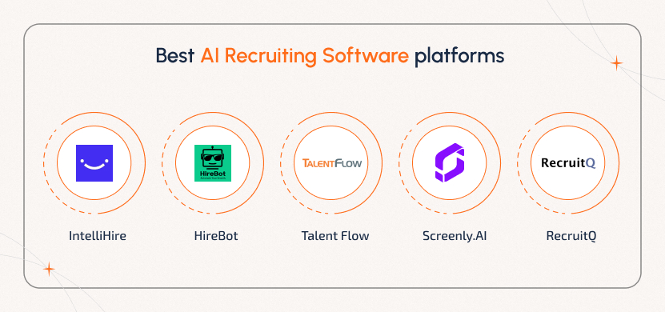
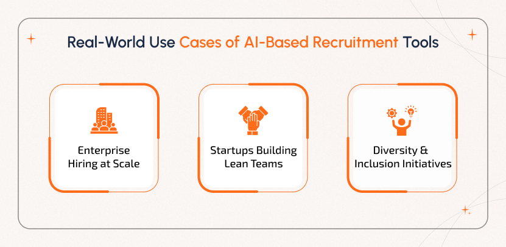
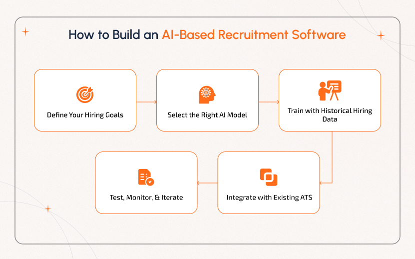
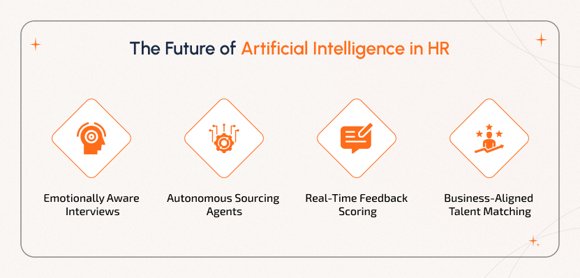

The recruitment landscape is witnessing a major shift, and AI in recruitment is revolutionizing the way companies attract, assess, & hire talent. Traditional hiring methods usually involve manual resume reviews, repetitive screenings, and slow communication. Companies are using AI hiring software and intelligent automation platforms to speed things up and make accurate decisions.
With businesses looking for faster, bias-free, and data-driven hiring processes, knowing how to build an AI agent for recruitment isn't just about automation. They are smart tools that can scan resumes, match the right candidates to the right jobs, and even chat with applicants. This, in turn, saves time for both HR teams and job seekers.
As more businesses look for faster and smarter ways to hire, AI-powered recruitment platforms will gain a competitive edge. This article explains everything from the key features to the benefits and future trends of the intelligent recruitment platform in detail. This way, you will be able to understand how to choose and implement the right solution for your hiring needs.
What is AI-Based Recruitment Software?
AI-based recruitment software refers to smart hiring solutions that use artificial intelligence to automate and improve different stages of the hiring process. These tools help HR teams not just save time and reduce bias but also make better hiring decisions by analyzing large amounts of candidate data quickly & accurately. From sourcing candidates to screening resumes and finding job fit, these tools help recruiters work faster and make more informed decisions.
An AI recruitment tool uses advanced technologies such as machine learning, natural language processing (NLP), and predictive analytics to automate repetitive tasks and analyze candidate data. It supports scanning resumes, assessing skills, ranking applicants, and even conducting chat-based interviews.
Is ATS an AI Tool?
No. An ATS is not an AI tool. In other words, a traditional Applicant Tracking System (ATS) mainly helps organize and store candidate information. Thus, it is important to note that not all ATS platforms are AI-enabled; many modern systems have built-in AI features.
A modern AI-powered ATS supports screening resumes intelligently, recommending top candidates, predicting hiring success, and reducing bias. This way, it can go far beyond what legacy systems can offer.
Traditional Tools vs. AI Applicant Tracking System
AI-based recruitment tools are a game-changer compared to hiring from a manual, time-consuming process. AI-powered tools for recruiting offer a smart, data-driven strategy that makes it easy for companies to find the right talent faster.
| Capability | Traditional ATS | AI-Based Recruitment Software |
|---|---|---|
| Resume Screening | Basic keyword filters | Contextual skill and role matching |
| Candidate Ranking | Manual shortlisting | Automated, data-driven ranking |
| Communication | Manual follow-ups | Chatbots & automated engagement |
| Learning & Insights | Static workflows | Adaptive & continuously improving |
| Bias Reduction | Prone to human bias | AI-led fair & inclusive screening |
Top Features of AI-Based Recruitment Software
Here in this section, you will get to know the powerful features that make AI recruitment tools an essential entity for modern hiring teams.

AI tools start to read and analyze resumes in seconds and extract key details like skills, experience, and education. With AI resume parsing tools, recruiters can easily eliminate manual errors, reduce bias, and speed up shortlisting.
With data-driven insights, recruiters can forecast potential performance, culture fit, and the likelihood of long-term retention. Thus, HR teams can make smarter, future-focused hiring decisions.
AI-powered ATS is the next-gen upgrade to traditional ATS platforms. It automates candidate progress tracking, interview scheduling, and follow-ups. Thus, AI ATS offers smart recommendations at every stage.
Recruiters can conduct on-demand interviews in which the top AI agents will evaluate facial expressions, voice tone, and language patterns to assess communication skills, emotional intelligence, and honesty. Thus, AI for candidate screening saves time and ensures evaluation consistency for the recruiter.
It is possible to boost the sourcing and engagement strategy with the help of AI tools for talent acquisition. They support scanning multiple platforms, identifying the best-fit candidates, and personalizing outreach with the help of machine learning recruitment tools. This way, AI HR software solutions help recruiters build hiring pipelines faster and more efficiently.
Automate screening, predict candidate success, and hire faster—without adding extra load.
Benefits of Using AI in Recruitment
Our next-gen recruiting technology provides smarter decisions with tools like predictive analytics, real-time candidate scoring, and intelligent resume parsing. Get to know how AI is transforming hiring into a faster, fairer, and more strategic process from the section below:

AI is capable of screening thousands of resumes in minutes. This significantly reduces time-to-hire and helps recruiters stay focused on finding top talent efficiently.
When trained correctly, AI models will follow consistent, data-driven rules. This minimizes unconscious bias and promotes a fair hiring process.
AI automates repetitive tasks and accelerates decision-making while hiring candidates. It cuts down recruitment costs and reduces productivity loss from vacant roles.
AI-based recruiting software will assess every applicant using the same criteria, ensuring objective and standardized evaluation across the board.
No matter if you are hiring a single candidate or in bulk, AI recruitment tools scale seamlessly, and you can manage high volumes without compromising quality.
AI has the capability to rank candidates based on skills, behavior patterns, and job fit. This leads to better hires who perform well and stay longer in the recruitment process.
Best AI Recruiting Software platforms in 2025
AI recruiting tools are becoming essential for companies looking to modernize and scale their hiring efforts. If you are unsure of which AI tool is best for recruitment, then take a look at the section below, as it covers the top tools offering unique strengths for different hiring needs:

It uses advanced data models to predict candidate success and streamline hiring with an intelligent tracking system.
- Key Features – Predictive Analytics & Smart AI-powered ATS
- Best Suited For – Large Enterprises
This tool is ideal for lean teams as it can automate screening and interviewing. Thus, HireBot makes it easy to move fast with limited resources.
- Key Features – Resume parsing, automated interviews
- Best Suited For – Startups & Recruiting Firms
It offers seamless integration across HR tools with smart automation to manage sourcing, outreach, and onboarding.
- Key Features – Workflow automation, multi-channel sourcing
- Best Suited For – HR Tech Ecosystems
This tool analyzes video interviews using AI to assess tone, facial cues, and honesty. Thus, it is perfect for scaling candidate evaluation.
- Key Features – Video interview analysis, sentiment detection
- Best Suited For – High-Volume Hiring Teams
This tool combines AI agents and chatbots to engage candidates, answer FAQs, and guide them through the application process.
- Key Features – Conversational chatbot, AI recruiting assistant
- Best Suited For – Agile Talent Acquisition
AI Agent vs. Chatbot in Hiring – What's the Difference?
Chatbots and AI agents play a major role in recruitment automation. However, both differ significantly in terms of the purpose they serve and their capabilities. Thus, it is vital to understand the differences to choose the right tool for your hiring needs.
A chatbot is typically rule-based and handles basic, repetitive tasks such as:
- Responding to FAQs
- Gathering candidate information like name, resume, availability
- Assisting with interview scheduling
Chatbots are useful for improving response time and reducing manual workload in early candidate engagement.
An AI agent goes beyond scripted replies and acts with intelligence and adaptability:
- It makes context-aware decisions based on candidate behavior and data
- It learns and improves from ongoing interactions
- Agents can support screening, assessment, and onboarding workflows
- It can seamlessly integrate with AI-powered ATS and other HR tools
When to Choose What?
When your goal is to offer basic interaction and quick responses, a chatbot is all you need. But if you are looking for smart, scalable, and insight-driven hiring, an AI agent provides the intelligence and flexibility modern recruitment demands.
Real-World Use Cases of AI-Based Recruitment Tools
AI recruitment tools are not just a trend; they are delivering measurable results across industries. This section covers some practical examples of how organizations are leveraging AI to improve hiring:

As per IBM reports, the company has reduced time-to-hire by 45% using AI-driven recruitment solutions like automated resume screening and digital interviews. Their Watson Recruitment platform has helped evaluate qualifications based on data and not just randomly.
According to a survey by Eightfold, 75% of companies using AI cut their time-to-hire by over 50%. This has enabled lean startups and agencies to build teams faster using automated ranking and scheduling.
Unilever's use of AI to anonymize resumes and assess candidates via games and videos boosted the diversity of the candidate pool by 16% while reducing screening time by 75%.
Things to Ask Before Choosing an AI Hiring Platform – Smart Buyers Checklist
Just before investing in AI hiring software, it is important for businesses to take a look at the things that lie behind the flashy features. You need to ask the right questions to ensure the tool aligns with your goals, integrates with your systems, and delivers intelligent, future-ready recruitment.
- Does it integrate with your existing HR tech stack?
- Is the AI transparent and explainable?
- Can it scale with your hiring needs?
- How frequently is the AI model updated?
- Is it a learning AI agent or a rule-based system?
- What compliance and data privacy standards does it follow?
Asking all these questions upfront not only helps you avoid vendor lock-in and reduces implementation risk but also helps you choose an AI hiring solution that grows with your business.
How to Build an AI-Based Recruitment Software?
Building an AI-powered recruitment tool or agent is not just about automation. It is all about creating a system that can learn, adapt, and make intelligent hiring decisions. A well-designed AI recruiting assistant can reduce manual workload, improve candidate matching, and enhance hiring outcomes across the board.

Step 1 – Define Your Hiring Goals
The first step is to start identifying what you want to achieve. Define if your focus is on reducing time-to-hire, enhancing diversity, improving candidate quality, or increasing scalability. With a clear goal, it is possible to shape your AI's design and functionality.
Step 2 – Select the Right AI Model
Since different AI techniques serve different needs, it is vital to choose the right model from the different types of AI agents for your recruiting software development.
- NLP (Natural Language Processing) – Ideal for resume parsing, job description matching, and chatbots.
- Computer Vision – Works for video interview analysis and facial expression recognition.
- Predictive Analytics – Helps forecast candidate performance, retention, and success.
Step 3 – Train with Historical Hiring Data
After careful selection of the AI model, you need to feed the model with your past hiring records, such as resumes, interview scores, offer acceptance rates, employee performance reviews, etc. This helps the AI learn which candidate traits predict success or failure, refining its decision-making over time.
Step 4 – Integrate with Existing ATS
In this step, you need to connect the AI solution with popular ATS platforms like Greenhouse, Lever, Workday, or BambooHR. This ensures seamless data flow and helps avoid disrupting your current workflows.
Step 5 – Test, Monitor, & Iterate
Launch a pilot version of the software and monitor its performance closely. You need to then track KPIs like quality of hire, diversity metrics, and time-to-hire. Use feedback from HR teams and candidates to continuously improve and retrain the model.
FYI: Just before you start with scaling, it is important to analyze the performance and evaluate the cost of AI agents based on usage, training time, and integrations.
Tap into expert-backed AI strategies to develop recruiting software that scales with ease.
Cost of AI-Based Recruitment Software in 2025
The cost of AI hiring tools in 2025 differs based on features, scalability, and team size. In most cases, providers offer tiered pricing and allow businesses to start small and upgrade as they grow.
| Tier | Estimated Monthly Cost | Key Features |
|---|---|---|
| Basic | $50 – $100 | AI resume screening, basic ATS functionality |
| Pro | $200 – $500 | Predictive hiring, job-candidate matching, system integrations |
| Enterprise | $1,000+ | AI recruiting agents, workflow automation, and premium support |
Besides this, there are platforms that offer usage-based or per-hire pricing for additional flexibility. This suits startups or seasonal hiring needs.
Overall, it is not necessary to jump into an enterprise plan immediately. Rather, businesses should begin with core AI features like automated screening at first and expand into full-scale recruitment platforms using agents and advanced analytics.
The Future of Artificial Intelligence in HR
With the evolution of AI, the roles of HR will go beyond automation. The next wave of AI innovation is focused on making hiring more strategic, human-centric, and personalized.

Emotionally Aware Interviews
AI will analyze tone, facial expressions,
and sentiment to better understand the candidate's emotional intelligence and
communication style.
Autonomous Sourcing Agents
Intelligent agents will proactively look for
top talent across platforms, assess fit in real-time, and initiate outreach without
human input.
Real-Time Feedback Scoring AI will offer instant insights even during interviews, scoring candidate responses based on role-specific benchmarks and behavioral data.
Business-Aligned Talent Matching AI hiring tools will integrate deeply with business performance data and help HR teams align hiring decisions with long-term outcomes like retention, engagement, and productivity.
The future of AI-based recruitment software does not lie just in speed or efficiency. Rather, it is about using advanced technology to create a more empathetic, inclusive, and insight-driven hiring experience where both organizations and candidates can grow.
Why Choose Sparkout Tech for AI-Based Recruitment Software Development?
When it comes to building intelligent, scalable, and future-ready hiring platforms, Sparkout Tech stands out as a trusted AI software development company. With a proven track record in AI agent development, custom ATS solutions, and HR automation platforms, we transform traditional hiring into data-driven, AI-powered experiences.
We build solutions with advanced features like predictive hiring, resume parsing, and AI-powered interviews tailored to your hiring goals.
At Sparkout, we don't just use chatbots — we design intelligent, context-aware AI agents. When comparing chatbot vs AI agent, the latter supports enhanced screening, engagement, and onboarding.
From concept to deployment, our team handles everything from AI applicant tracking systems to dashboards, analytics, and integrations.
We follow global HR standards and privacy regulations like GDPR and EEOC in all our solutions.
No matter if you are hiring 10 or 10,000, our platforms grow with your business needs.
We don't stop with delivering the solution. Rather, we offer ongoing AI model training, performance tracking, and feature scaling.
From AI screening to full-stack HR automation—we turn your hiring vision into reality, fast and future-proof.